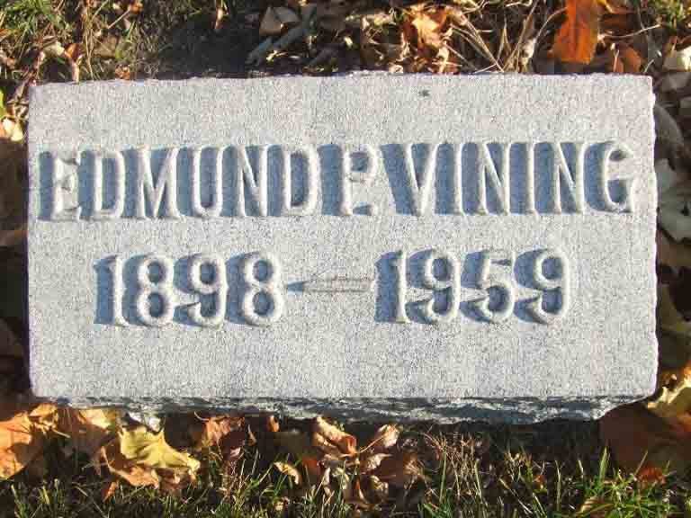
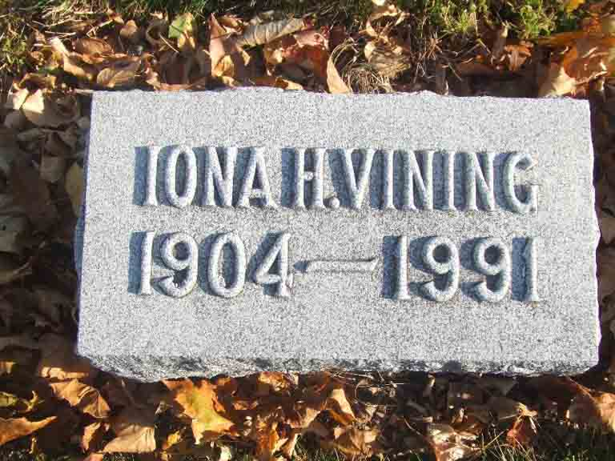

Census Data
| 1930 | 1940 | |
| Edmund Pendleton Vining Jr. | 32 | 42 |
| Iona Helen (Jensen) Vining | [25?] | 35 |
| Edmund P. Vining | 3 y., 1 m. | 13 |
| Valerie Vining | 9 |


Death Data
Gravestones for Edmund Pendleton Vining Jr. and Iona Helen (Jensen) Vining, in Mound Grove Cemetery, Kankakee, Kankakee County, Illinois (from Find A Grave):
